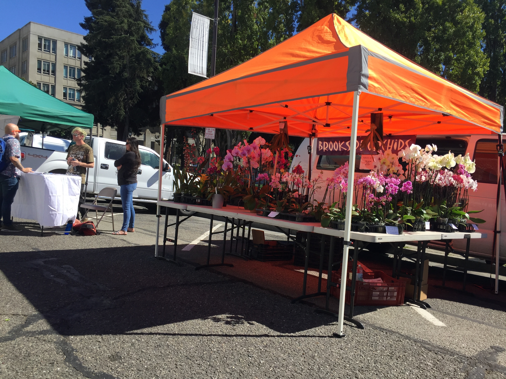

Downtown Berkeley Farmers Market
My first farmers market experience
I personally haven’t been to many farmers markets in the past, so I was always under the impression that customers are there to buy groceries just like in a regular store and go on about their day after that. But, as I’d come to know, farmers markets are much more than “outside grocery stores”.
Shoppers attend for the pleasant and comfortable experience of an all-day affair - on the other hand, buying food at the grocery store wouldn’t be as relaxing and time-consuming. There are many reasons one might want to stick around for longer than it takes to buy food: enjoy the ambiance, speak with the farmers and sellers, and even sit down to listen to the music.
Here at the Downtown Berkeley Farmers Market, which takes place every Saturday from 10am to 3pm, the demographics of customers I could see is quite diverse including: families, college students, and retirees. EBT (Electronic Bank Transfer) cards are accepted here, which surprised me since I originally thought that they were only accepted by grocery stores. Considering that the laid-back farmers market is much less judgemental than the grocery store, it is a useful resource for those who are facing food insecurity.
During my visit I spoke to Ryan and Zoe, a young couple who were shopping around in the market. When I asked them about what their experience was like at the market and what they liked about shopping there, they were quick to tell me about how exciting the experience is. Paraphrasing their answers, the farmers market feels more communal and less corporate than a normal store. To them, the produce looks a lot prettier and more organic in the way that its displayed. They really echoed the relaxing nature of the farmers market with their feeling no urgency when shopping there. Like them, I also felt more free to just wander around and explore the stands. In this way, the farmers market is a vastly different experience to a brick and mortar store.
Tomorrow I will make my way to another farmers market: the Kensington Market.